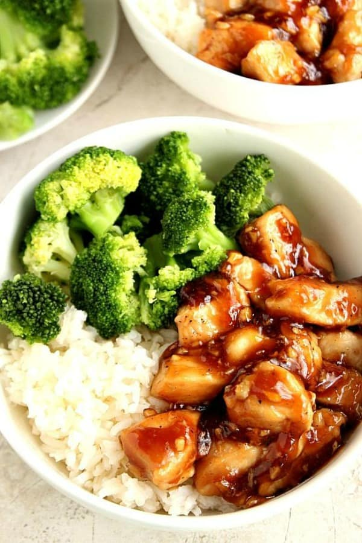

Chicken Teriyaki Over Rice

Description
Chicken Teriyaki Over Rice is a
popular and simple dish that can be made quickly and
at home with minimal ingredients. It is sour with a flare of
sweet for those who have a sweet tooth.
Because the recipe is so simple, you want to make sure that
your ingredients are of high quality. Poorly picked Brocolli,
or overcooked rice will really take away from the dish.
Ingredients
- 1 pound boneless skinless chicken breasts
- ⅓ cup soy sauce
- ¼ cup brown sugar
- salt and pepper
- 1 tablespoon sesame seeds
- canola oil
- 1 green onion, thinly sliced
- White rice, cooked
- Broccoli, steamed
- Season the chicken with a salt and pepper, to taste. Set aside.
- Heat the oil in a heavy bottomed frying pan or wok over medium heat
- You don't want to start the chicken off over too high a heat otherwise it will not cook through before burning
- Add chicken and saute, stirring occasionally, until the chicken is no longer pink on the inside, and golden brown on the sides.
- Once the chicken is ready to go, pour the soy sauce, brown sugar, and sesame seeds over it, then toss to combine until the chicken is evenly coated.
- Continue cooking, stirring frequently until the sauce reaches a simmer and thickens
- Remove from heat, and serve immediately with cooked white rice and steamed broccoli, garnished with thinly-sliced green onions if desired.
- Drizzle the remaining teriyaki sauce over if desired.
- * The magic is not over cooking the chicken during the sautéing process. It gives the glaze mixture more time to cook down. Keep stiring the chicken while its glazing. It will help it not to burn.